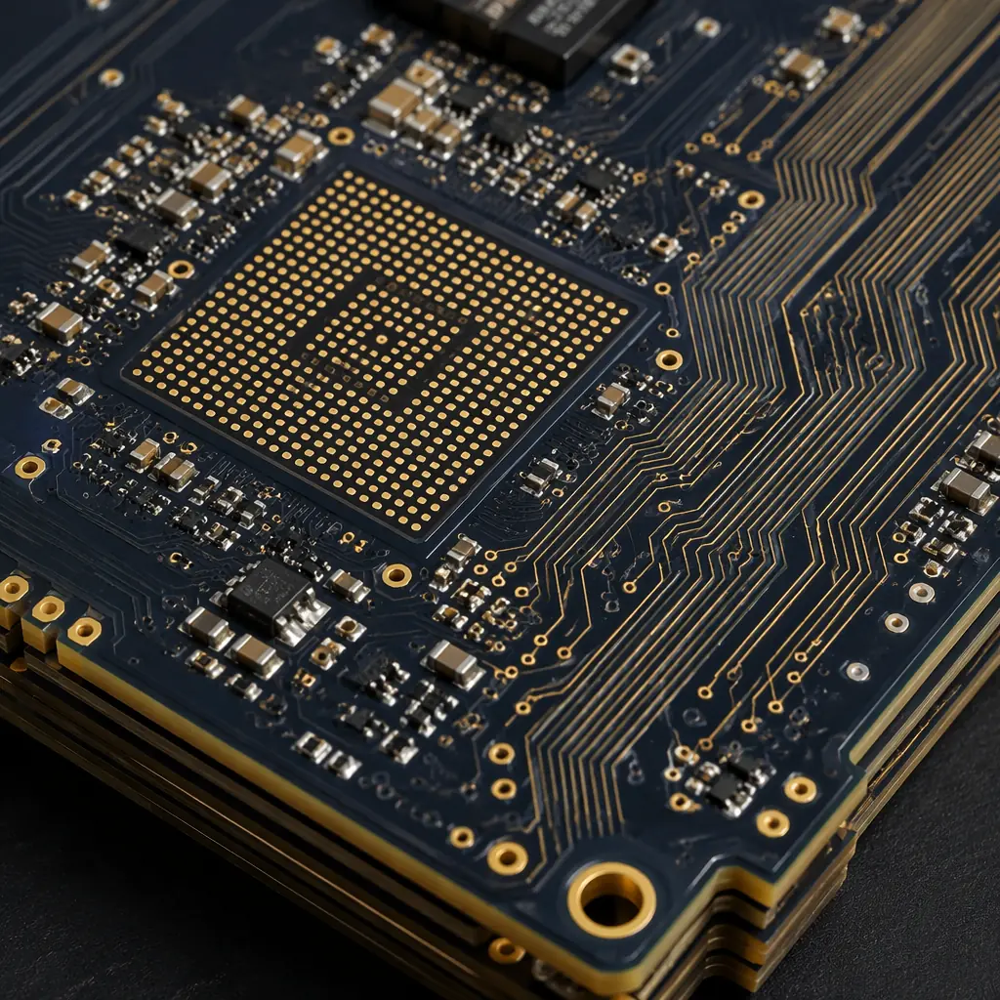
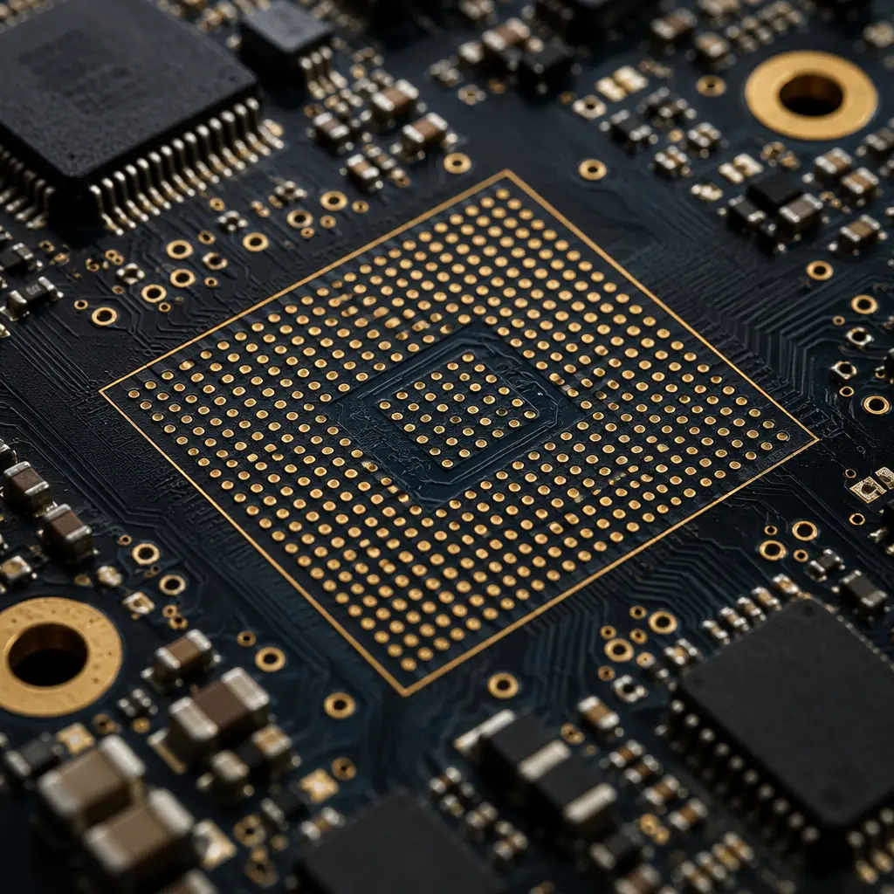
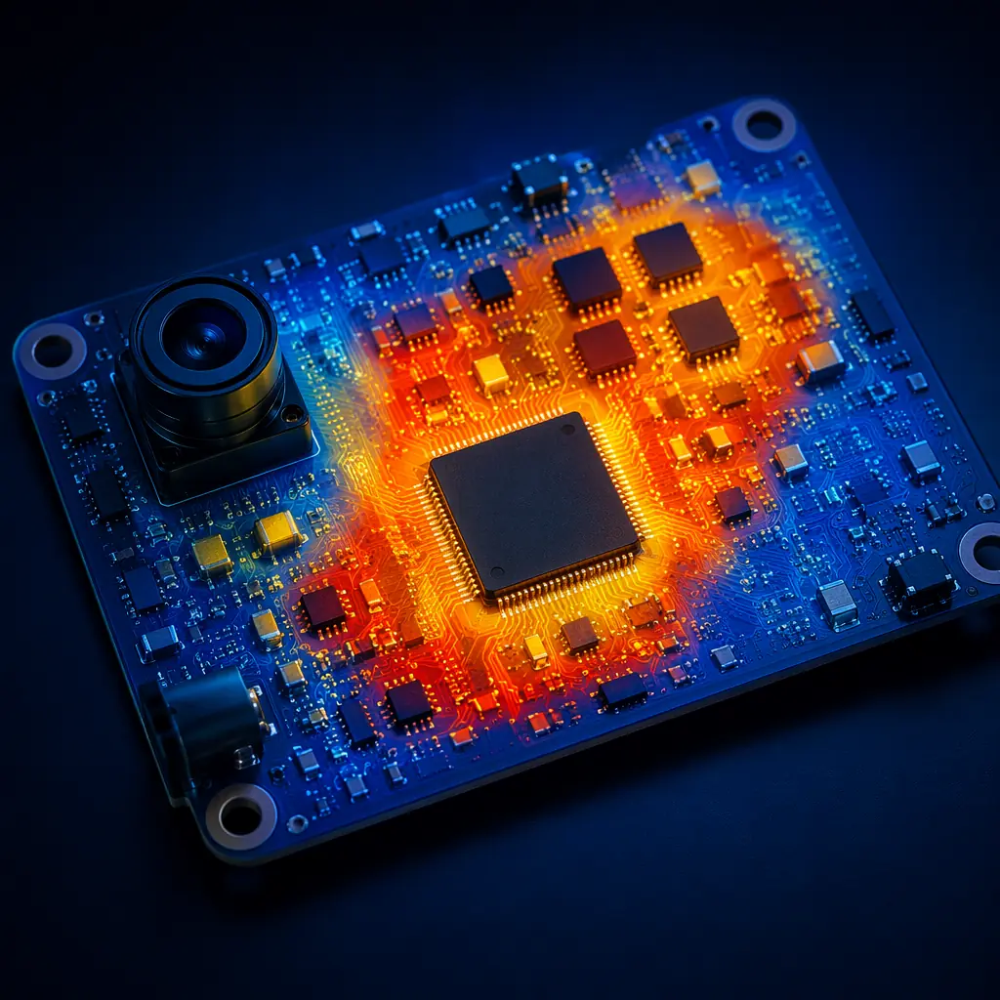

The global video surveillance market is projected to exceed $80 billion by 2028, driven by enterprise security upgrades, smart city deployments, and edge-AI analytics moving processing into the camera itself. At the center of every IP camera, NVR encoder board, and access control panel sits a PCB that must handle multi-gigabit video data streams while surviving outdoor conditions that would destroy a standard commercial board within months. The specification gap between a consumer webcam PCB and a professional surveillance-grade board is not about component cost — it is about signal integrity at speed, environmental sealing, and thermal management for electronics that never power down.
At Huaxing PCBA, our Shenzhen facility produces surveillance-grade PCBs with ±5% impedance control for high-speed SerDes lanes, 8-layer hybrid stackups combining Rogers 4350B RF substrates with high-Tg FR-4 for mixed-signal camera boards, and IPC Class 2/3 workmanship across 8 SMT lines — serving 150+ customers in 30+ countries with a 99.2% on-time delivery rate and IATF 16949-certified quality systems originally developed for automotive-grade PCB reliability.

The Three Specification Challenges Unique to Surveillance Electronics
Surveillance PCBs sit at the intersection of three demanding requirement sets — high-speed digital, harsh-environment reliability, and always-on thermal cycling — that are rarely combined in a single product category:
| Requirement Domain | Consumer Electronics | Surveillance PCB |
|---|---|---|
| Signal bandwidth | <1 Gbps (USB/HDMI) | 2.5-10 Gbps per lane (MIPI CSI-2, SDI, 10GbE) |
| Operating temperature | 0 to +40°C | -40 to +85°C (outdoor enclosure, solar load) |
| Duty cycle | Intermittent use | 24/7/365 continuous operation |
| Humidity exposure | Indoor only | 0-95% RH, condensing (IP66/IP67 housing) |
| EMI environment | Controlled | Nearby IR illuminators, PoE power rails, motor drivers |
| Expected field life | 3-5 years | 7-10 years minimum (infrastructure deployment cycle) |
Each of these domains interacts with the others in ways that create non-obvious failure modes. A board that passes signal integrity validation at 25°C bench conditions can develop bit errors on MIPI lanes at -20°C when the dielectric constant of the PCB substrate shifts. A conformal coating that prevents moisture ingress can simultaneously trap heat from the image sensor processor, raising junction temperatures 15-20°C above what the thermal simulation predicted. Specifying a surveillance PCB requires understanding these controlled impedance and material interactions across the full operating envelope.

High-Speed Video Signal Integrity: Why ±5% Impedance Control Is Non-Negotiable
Modern IP cameras push multiple 4K video streams through MIPI CSI-2 or SLVS-EC interfaces running at 2.5 Gbps per lane — and next-generation models with on-camera AI analytics add PCIe Gen 3 lanes to the same board for the neural processing unit. At these data rates, a 10% impedance mismatch on a differential pair can cause 3-5 dB of return loss, degrading the signal-to-noise ratio to the point where the image sensor's full dynamic range is unrecoverable.
Three parameters determine whether a surveillance camera PCB will deliver clean video or noisy frames with visible artifacts:
Dielectric Material Selection for GHz Frequencies
Standard FR-4 has a Dk of ~4.2-4.5 at 1 GHz, but that value drifts with temperature and frequency. For surveillance boards carrying multi-Gbps serial links, hybrid stackups pair Rogers 4350B (Dk 3.48 ±0.05) or Isola I-Speed on the outer layers with high-Tg FR-4 cores — delivering stable impedance across the -40°C to +85°C range without the full cost of an all-RF stackup. See our PCB materials guide for detailed substrate comparisons.
Differential Pair Routing Discipline
At 5 Gbps, the maximum allowable intra-pair skew is under 5 ps — roughly 0.75 mm of length mismatch on FR-4. This requires serpentine tuning structures on every differential pair and strict adherence to ground reference plane continuity. Via transitions between layers must be back-drilled when stub length exceeds 1/4 wavelength at the Nyquist frequency. Boards fabricated without controlled etching produce line width variation of ±15-20%, making impedance targets impossible to hold.
Power Integrity for Image Sensor Analog Rails
CMOS image sensors require analog supply rails with under 10 mV peak-to-peak ripple — noise on the analog rail directly couples into pixel readout as fixed-pattern noise visible in low-light footage. This demands dedicated power planes with split analog/digital domains, ferrite bead filtering, and low-ESR ceramic decoupling capacitors placed within 2 mm of sensor power pins. A poorly designed PDN (power distribution network) on a surveillance board produces cameras that look sharp in daylight but degrade to unusable noise levels in night vision mode.
Huaxing's in-house TDR (Time Domain Reflectometry) impedance testing verifies every controlled-impedance board against its target ±5% specification before shipment. We also provide impedance coupon reports with each production batch — not just a pass/fail stamp but the actual measured values per layer, so your engineering team has traceable data for correlation with system-level signal integrity measurements. This is the same test methodology used for 5G base station and telecom PCBs where signal integrity requirements are similarly demanding.
Environmental Protection: Designing PCBs for Outdoor Survival
An outdoor surveillance camera enclosure can reach +70°C internal temperature under direct solar load in summer — and drop to -30°C on a winter night in northern climates. That 100°C swing, repeated daily for 7-10 years of field life, drives every material and process decision:

Substrate Selection for Thermal Cycling
Standard FR-4 has a glass transition temperature (Tg) of ~130°C and a coefficient of thermal expansion (CTE) of ~14-16 ppm/°C below Tg. During daily thermal cycles from -30°C to +70°C, the differential expansion between the copper (CTE ~17 ppm/°C) and the laminate creates cyclic shear stress on plated through-hole barrels. After 2,000-3,000 cycles — roughly 5-8 years of outdoor deployment — these stresses cause barrel cracking and intermittent opens that are nearly impossible to diagnose in the field.
The solution is high-Tg FR-4 (Tg ≥ 170°C) with a lower Z-axis CTE (below 3.0% at 260°C for 30 minutes per IPC-TM-650) for the core layers, optionally paired with Rogers or ceramic-filled hydrocarbon materials on signal layers for the most demanding deployments. This combination typically adds 15-25% to bare board cost but extends field life from 5 years to 10+ years — a trivial premium when the alternative is dispatching a technician to replace failed cameras on poles and rooftops.
Conformal Coating and Corrosion Protection
Even inside an IP66-rated housing, surveillance PCBs are exposed to condensation during daily temperature-humidity cycles. The industry standard protection is a 25-50 μm acrylic or silicone conformal coating applied after assembly, with masked keep-out zones around connectors, buttons, and unsealed components. For coastal or high-humidity deployments, a 2-part polyurethane coating at 50-75 μm provides superior moisture barrier performance — at the cost of being more difficult to rework.
The critical specification parameter is the coating's CTE match to the PCB substrate. A mismatched CTE causes the coating to crack at the edge of component bodies during thermal cycling, creating capillary paths that actually trap moisture against the board surface rather than protecting it. We specify coating materials with CTE within 20% of the PCB substrate's Z-axis CTE — a detail that generic assembly houses rarely verify but that makes the difference between a 3-year and a 10-year outdoor deployment.
EMI Shielding in Compact Camera Form Factors
Surveillance cameras pack high-speed digital, sensitive analog, power conversion, and sometimes IR LED drivers with 500 mA+ switching currents into an enclosure the size of a fist. The near-field electromagnetic interference from a PoE DC-DC converter or an IR LED PWM driver operating at 200-500 kHz can couple directly into the image sensor's analog front-end through the ground plane — producing diagonal banding patterns in video that appear and disappear with IR illuminator duty cycle.
Effective EMI control in surveillance PCBs requires a multi-layer strategy:
- Dedicated ground planes on layers 2 and N-1 (where N is total layer count) provide continuous return paths for high-speed signals and reduce loop area for digital switching currents
- Guard rings with stitching vias around the image sensor analog section create a Faraday cage at the PCB level, isolating sensitive nodes from switching noise on adjacent digital domains
- Board-level shielding cans over the PoE power supply section and IR LED driver — specified during layout with keep-out zones and spring-contact grounding pads — suppress radiated emissions at the source rather than trying to filter them at the victim
- Split power planes with ferrite bead bridges between digital 3.3V/1.8V/1.2V domains and the analog 2.8V/1.8V sensor supply prevent conducted noise from propagating through the PDN
These techniques are well-established in industrial control PCB design for PLC and VFD environments where high-power switching noise coexists with precision analog measurement — and they translate directly to surveillance applications where the "precision analog measurement" is a multi-megapixel image sensor reading photon counts.
Production Reality Check: A surveillance camera PCB that passes radiated emissions testing on the bench can still produce visible noise in video when the IR LEDs are active. The bench test measures far-field emissions at 3-10 meters; it does not detect near-field magnetic coupling from the LED driver inductor into the image sensor's analog ground. Always validate video quality with IR illuminators at full power — this is the only test that catches PCB-level EMI issues that standard EMC compliance testing misses.
Manufacturing Process Requirements for Surveillance PCBs
The assembly process for surveillance PCBs requires tighter controls than general commercial electronics because the combination of fine-pitch BGAs, mixed-technology through-hole connectors, and post-assembly conformal coating creates process interdependencies:
| Process Step | Standard Commercial | Surveillance PCB |
|---|---|---|
| Solder paste inspection | Sampling (10-20%) | 100% SPI on all fine-pitch pads |
| Reflow profile | Standard SAC305 | Profiled per board (mixed component sizes + thermal mass) |
| AOI coverage | Solder joint only | Full board: solder + component presence + polarity + marking |
| X-Ray inspection | Optional (BGA only) | Mandatory: all BGAs + QFNs + PoE magnetics pads |
| Conformal coating | None | 25-75 μm acrylic/silicone/polyurethane per environmental class |
| Thermal cycling test | None | 100 cycles -40 to +85°C per IPC-9701 (sample basis) |
| Functional test | Power-on only | Full video stream capture + IR LED function + PoE negotiation |
For a deeper look at inspection methodologies, see our comparison of PCB testing methods covering AOI, X-Ray, flying probe, and functional test approaches — all of which apply directly to surveillance board validation.
Cost Drivers and Procurement Strategy
Surveillance PCBs typically cost 25-40% more per unit than equivalent-complexity commercial boards. The premium comes from specific, traceable cost drivers — and understanding them allows procurement teams to make intelligent trade-offs rather than accepting the default quote:
Hybrid Material Stackup (+20-30% material cost)
Replacing outer-layer FR-4 with Rogers 4350B for controlled-impedance signal layers adds roughly $3-5 per 100×150mm panel section at prototype volumes, decreasing at production scale. If your data rates are under 3 Gbps and trace lengths under 100 mm, high-Tg FR-4 with tighter Dk tolerance (±0.05) may be sufficient — eliminating the hybrid stackup premium.
Conformal Coating (+8-15% assembly cost)
Acrylic coating applied by selective robotic spray adds $0.50-1.50 per board depending on complexity and masked area percentage. Silicone and polyurethane coatings are 2-3× the material cost and require longer cure times. For indoor-only cameras (retail, office), conformal coating may be unnecessary; for outdoor deployments, it is not optional.
Impedance Testing (+$50-150 per batch)
TDR impedance coupon testing adds a fixed per-batch cost regardless of quantity. At 10,000 units, this is $0.005-0.015 per board — negligible. At 100 prototype units, it is $0.50-1.50 per board — significant. Skip it only if you are willing to validate signal integrity at the system level, which typically costs more in engineering time.
For procurement teams evaluating suppliers, the 10-point PCB supplier audit checklist provides a structured framework covering certifications, process controls, and quality documentation — applicable whether you are sourcing surveillance boards, automotive electronics, or industrial control PCBs.
The ENIG Surface Finish Decision for Surveillance Boards
Most surveillance camera PCBs use ENIG (Electroless Nickel Immersion Gold) as the default surface finish — and for good reason. ENIG provides a flat, solderable surface that handles fine-pitch BGAs (down to 0.4 mm pitch) without the coplanarity issues of HASL, and the nickel barrier layer prevents copper migration into the solder joint during years of thermal cycling. Compared to alternatives like OSP or immersion silver, ENIG offers superior shelf life and oxidation resistance — important when boards may sit in inventory before assembly and then operate in high-humidity outdoor environments.
One caution specific to surveillance applications: the "black pad" defect in ENIG — where excessive phosphorus content in the nickel layer creates a brittle intermetallic that fractures under mechanical stress — is catastrophic for BGA image processors with hundreds of balls. The failure mode is intermittent opens that appear only after thermal cycling, making it nearly impossible to catch in production test. Specifying ENIG per IPC-4552 Class 2 with a phosphorus content of 7-10 wt% in the nickel layer and a minimum gold thickness of 0.05 μm eliminates this risk at a negligible cost premium.